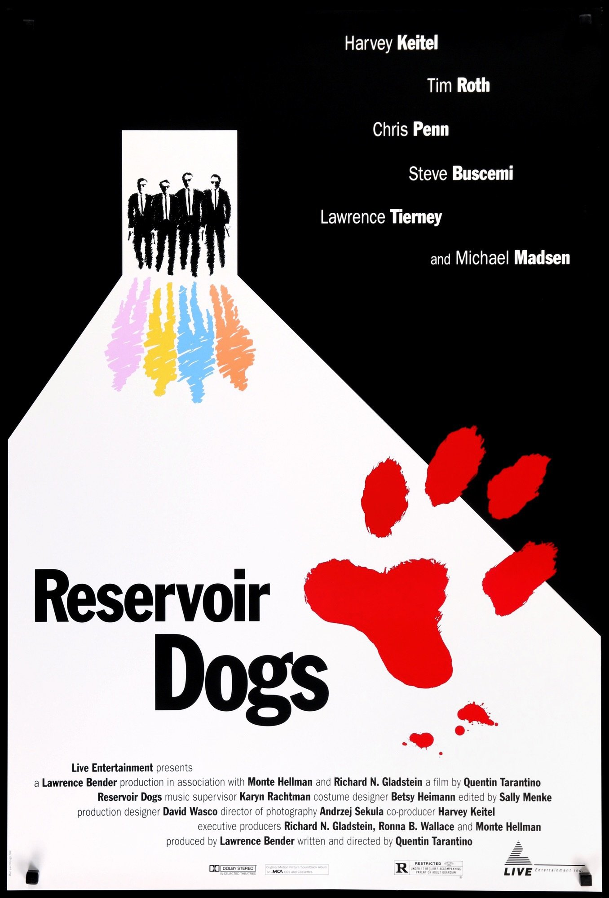
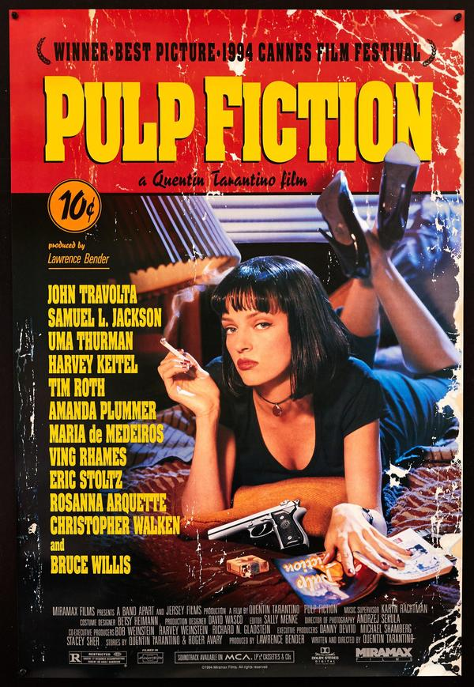
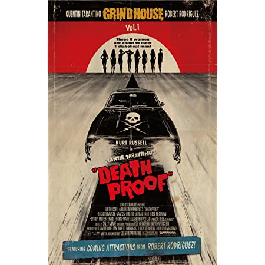
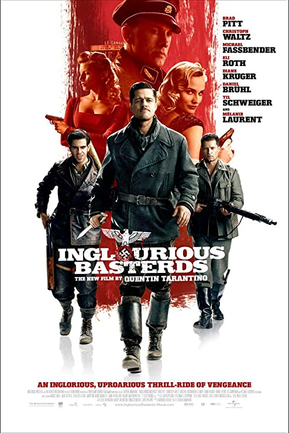
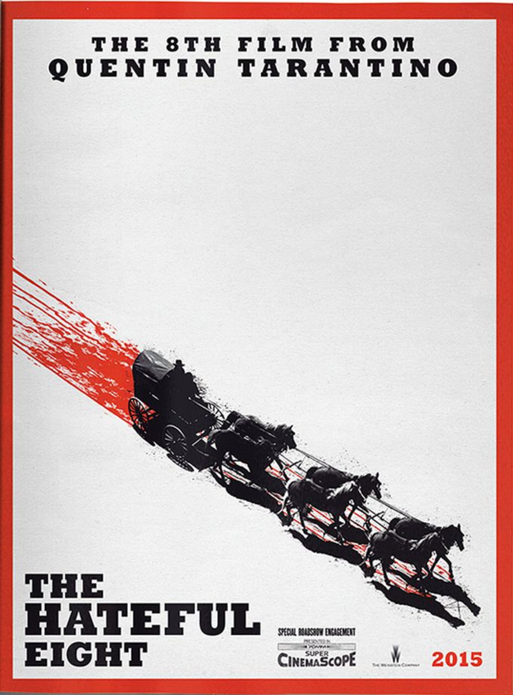

Early Indie Films
Reservoir Dogs
The directors first film was Reservoir Dogs was made for $1.2 million and only grossed $2.9 million. However, over time this film blew up, as it featured some very realistic, gritty, and pop culture filled dialogue. It also has such a wild and twisted story, which features some very violent and surprising twists throughout the film.
Pulp Fiction
After his first feature film's success, he followed up with Pulp Fiction, which is still regarded as one of the greatest and most quoted films of all time. With a stellar cast, the now stylized Tarantino dialogue and editing techniques, and a killer soundtrack this film won audiences over time and time again. While the film only cost $2 million to make it grossed $213.9 million!
Jackie Brown

His third feature film he made was Jackie Brown. This film cost $12 million and grossed $74.7, and while it did do well in the box office the film received a lot of mixed reviews. However, it developed a large cult following after its release. This film also notably got Chris Tucker his job for the Rush Hour series, even though he is only featured in about 10 minutes of the film.
Later Indie Films
Kill Bill Series

Kill Bill Volume 1 and 2 were released a year apart, and were filmed back to back. This film once again won audiences over with the incredibly complex choreographed action scenes, beautiful color schemes, and once again a perfect soundtrack and script, as well as an unforgettable set of characters. The films cost about $60 million collectively to make, but the film combine grossed about $333.1 million!
Deathproof
His last indie film he made was Deathproof which is still regarded as one of his most outrageous and risky film to date. This film featured a female stunt double to carry the film as the lead in the latter half of the film. This film was also the second part of a two part movie project that he and his good friend and filmmaker Robert Rodriguez were working on. While the films have nearly no correlation with each other, they are both slasher films they both desperately wanted to make. While the film is extremely well known, this film has a massive cult following, even thought film was made on a $30 million budget and only made $30.7 million.
Blockbuster Films
Inglorious Basterds
Tarantino's first true blockbuster film was Inglorious Basterds, which is one of his most well known and most loved film he's made. This film features an enormous cast, great special effects, some of the best camerawork and editing in film, and of course one of the best Tarantino scripts to date. While originally he wanted to make this into a mini-series, another director approached him and told him how disappointed he was that his next project wasn't in theaters. Therefore, he re-wrote the script and made it very different. Regardless of the story being in film or tv format, it was widely accepted and loved. In fact, the film's budget was $70 million and the film grossed $321.4 million!
Django Unchained

He then followed up with his first western Django Unchained, which features some of the best acting in Tarantino's films to date. It also features a lot larger sets, stuns, and pyrotechnics, which gets shown off in many scenes in the film. While the film cost $100 million to make, this film grossed $435.4 million making this Tarantino's highest grossing film to date!
The Hateful Eight
He then moved on to make another western film called The Hateful Eight. However, this film differed heavily from the Django Unchained, as this film primarily takes place in one cabin. Therefore, this film is a lot more condensed as far as set and the scale of the story as well. While certain fans of Tarantino raved about the film, it had plenty of poor reviews as well from fans. This is mainly due to the gratuitous violence, the slow movie story, and some viewers felt the character were to plain. Nonetheless, the film grossed about $155.8 million and only cost roughly $50 million to make.
Once Upon a Time in Hollywood
While Once Upon a Time in Hollywood is Tarantino's last film released, it is one of the most important films in his career. Tarantino wrote this film so in-depth, that many of the characters backgrounds are not even shown or talked about in the film. Instead, he told the actors directly what their characters have been through in extensive detail. The main cast were given booklets about themselves to study and help get them into character. He also shot about five 20 minutes episodes of a series he made up for the series. However, these episodes are only previewed extremely briefly in the film. This also featured some of the biggest stars in Hollywood currently, and a lot of really obscure but endearing Hollywood callbacks. While this will go over most viewers heads, many Tarantino and hardcore movie fans will understand his sentiment and vision, as he grew up in the late 60s watching these stars and films he references. This film's budget was $90 million and grossed about $374.6 million.

In fact, Tarantino was so inspired by the story that he wrote his first novelization. While the reviews were mixed, a lot of fans appreciated the immense background on characters and stories. While this is his first book, he stated on the Joe Rogan Podcast he plans to make a few books and stage productions before his last feature film.
Notable Works
- True Romance (Writer)
- Natural Born Killers (story writer)
- From Dusk Till Dawn (Screenplay Writer)
- CSI: Crime Scene Investigation (Writer and Director of two episodes)
- ER (Writer of one episode)